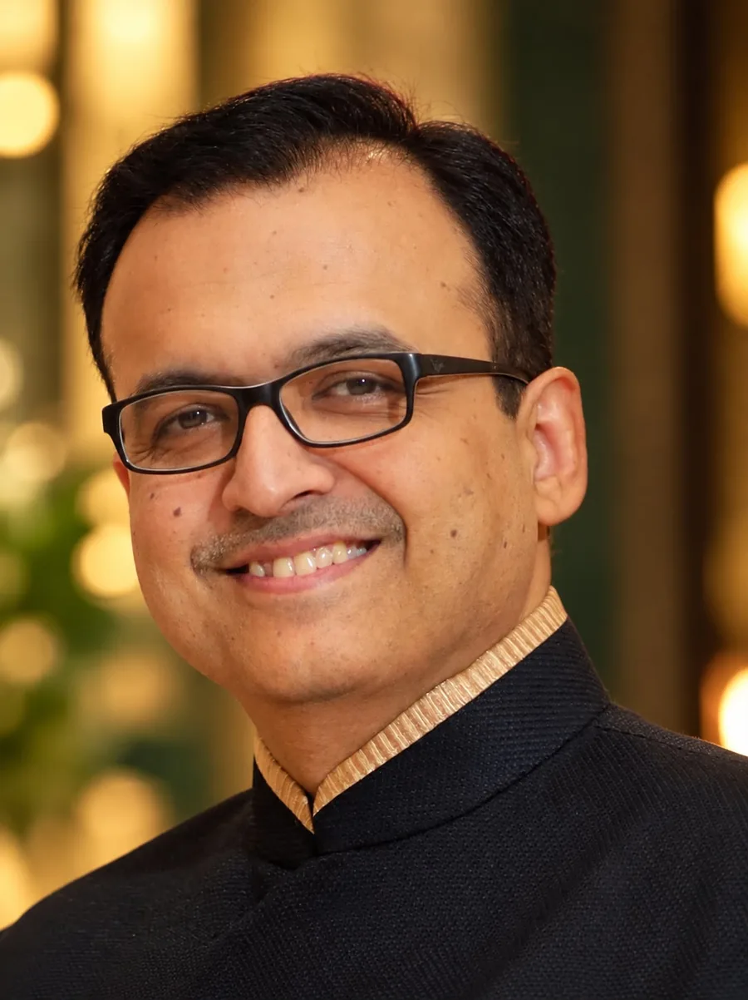

Punjabi By Nature
India
Director of Operations. Restaurant operations, systems, menu development and business management.

Practical consulting and thoughtfully sourced supplies for restaurants, hotels and caterers.
Whether we are refining operations, shaping a concept or sourcing supplies, the aim is the same: understand the need, then deliver with precision.

With 29 years of hospitality experience, Anmoll brings a combination of senior operational leadership and entrepreneurial insight. As Director of Operations at Punjabi By Nature (India), he developed extensive expertise in restaurant operations, systems, menu development and business management.
His journey spans The Masala Story (India) and consulting engagements with Namaste India (Malaysia), Gol Chakkar Cafe (UAE) and Bhaijaan (USA). These experiences have shaped his understanding of hospitality from both sides:
Double 10 Ventures brings these strengths together through hospitality consulting and restaurant supplies, offering solutions grounded in real industry experience.
See the Work →Director of Operations. Restaurant operations, systems, menu development and business management.
Own-brand and cloud-kitchen experience.
Hospitality consulting and restaurant supplies, grounded in real industry experience.
Representing Curry Fwd, Avinandan brings creative vision, a deep understanding of restaurant concepts and a shared passion for hospitality. Our association across several restaurant outlets designed by him has grown into a relationship built on trust, shared values and complementary strengths.
His contribution extends beyond individual projects. Avinandan has become an integral part of the Double 10 journey, bringing perspective, creative collaboration and a presence that has helped shape what the venture represents today.
Double 10 is my vision, but the journey carries the imprint of people who have been an integral part of it. Avinandan is, without doubt, one of them.
Grounded in real restaurant operations, not theory.
We understand the requirement before we propose a solution.
Delivery with precision, and value created for clients.
Dependable execution that earns repeat business.